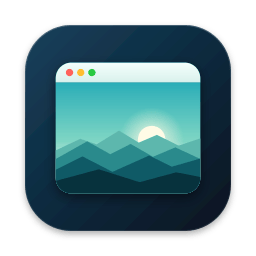
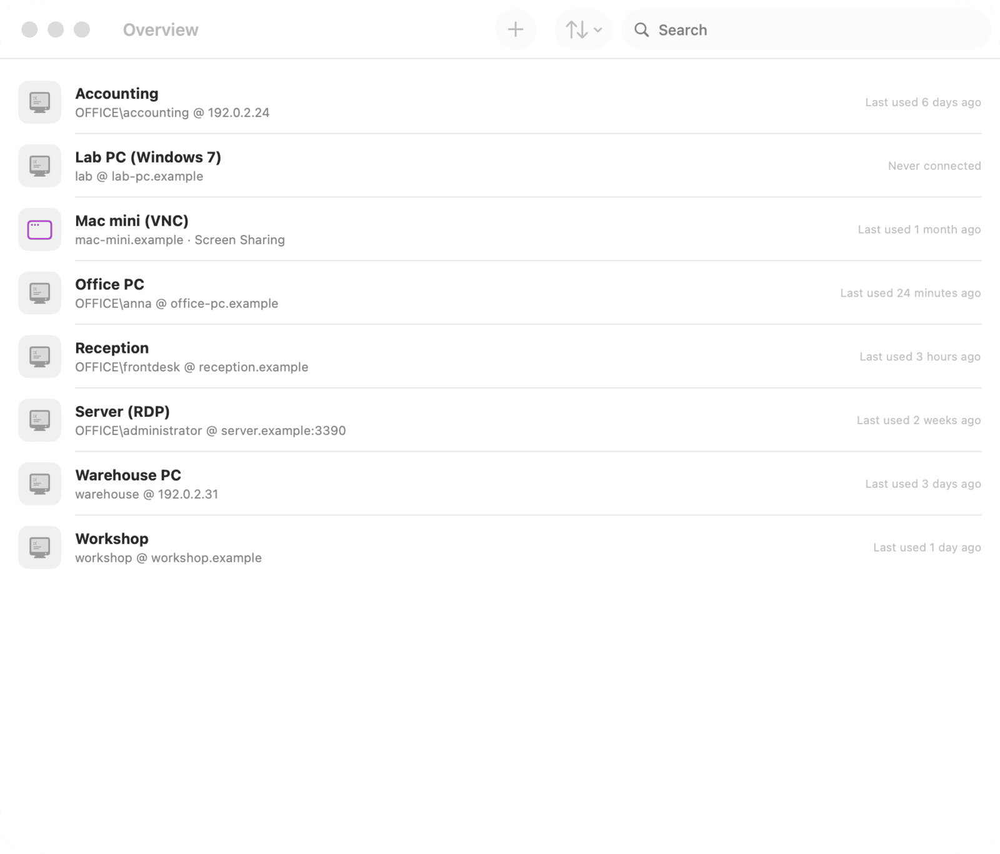
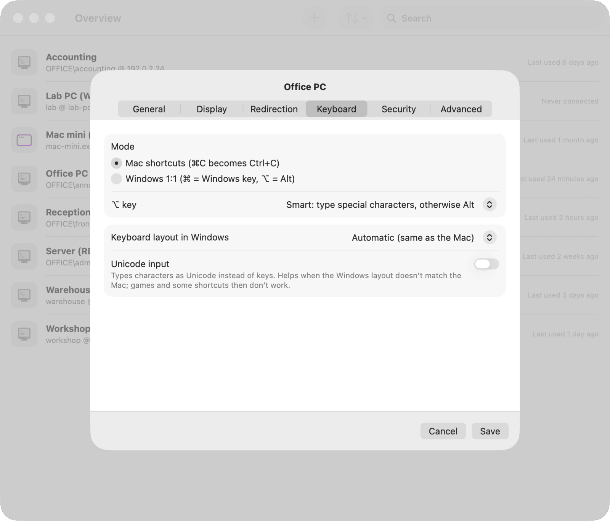
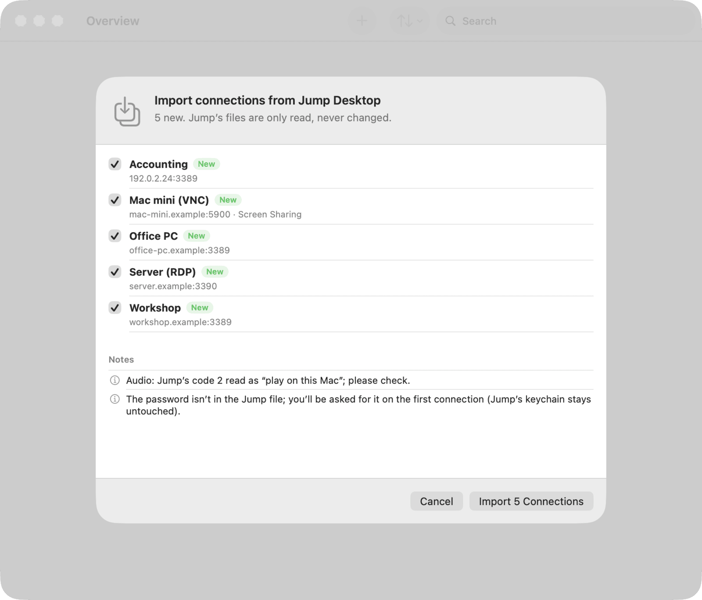

Your Mac muscle memory works in Windows
⌘C copies, ⌘← jumps to the start of the line, ⌥← moves by word, ⌘⇥ switches Windows apps, ⌘Q closes the Windows app. On a German keyboard ⌥L still types @.

Remote Desktop for Windows PCs, made for the Mac. Your Mac shortcuts just work.
A free, open-source RDP client for macOS. It translates your keyboard the way Jump Desktop does, keeps the clipboard in sync with images and files, and imports your Jump Desktop connections.
macOS 14 Sonoma or laterApple SiliconFree, Apache-2.0
English and German interface. First launch needs one extra step: see Installation.
Weitblick Remote was built to replace Jump Desktop as a daily RDP client for a handful of Windows PCs. It focuses on the two things you touch all day: the keyboard and the clipboard.
⌘C copies, ⌘← jumps to the start of the line, ⌥← moves by word, ⌘⇥ switches Windows apps, ⌘Q closes the Windows app. On a German keyboard ⌥L still types @.
On first start it offers to import your Jump Desktop connections, including shared folders, trusted certificates and Wake-on-LAN addresses. Passwords are asked once and kept in the Keychain. .rdp files open, too.
No subscription, no account, no telemetry. Built on FreeRDP, licensed under Apache-2.0, with the full source on GitHub. Your connections stay on your Mac.
⌘C, ⌘V, ⌘X and ⌘Z become their Ctrl versions, ⌘←/→ is Home/End, ⌥←/→ jumps by word, ⌘⇥ is Alt+Tab and ⌘Q is Alt+F4. Prefer plain Windows keys? Switch a connection to “Windows 1:1”.
The session uses your Mac’s keyboard layout: German, Swiss, US, British and more. ⌥ symbols arrive as typed: @ € { } [ ] | \ ~ and „quotes“. Dead keys like ´ and ^ compose as on the Mac.
Text, formatted text (HTML, RTF) and images in both directions. Copy files or whole folders in Finder and paste them in Explorer, and the other way round, up to 2 GB per copy.
An overview tab plus one tab per session, built on real macOS window tabs: drag a tab out to give it its own window, switch with ⌃⌥⌘← / →. Or open every session in its own window.
Share Mac folders as drives in Windows. Play sound on the Mac, on the PC or not at all. Your Mac’s printers show up in Windows. The microphone can be passed through per connection.
Wi-Fi hiccup? The session reconnects on its own to the same Windows session, with your programs still open. It keeps trying for about three to four minutes.
Imports every connection from Jump Desktop on first start, with a preview before anything is saved. Run it again any time from the File menu; a re-import updates instead of duplicating.
Passwords live in the macOS Keychain, saved only after Windows accepted them, and they stay on this Mac (not synced to iCloud).
The first time, you see the PC’s certificate and its SHA-256 fingerprint and decide: once, always, or not at all. If a trusted certificate ever changes, you get a clear warning.
Wake a sleeping PC from the connection’s context menu. The MAC addresses come along from Jump Desktop.
Sessions at full Retina resolution with crisp text. Resize the window and Windows follows with a matching resolution. Full screen with ⌃⌘F.
For old Windows 7 or embedded PCs, switch off Network Level Authentication per connection. TLS 1.0 and classic RDP security are then allowed as fallbacks.
The default rules of the “Mac shortcuts” mode, taken from the app’s keyboard engine. They follow Jump Desktop’s defaults. Add ⇧ to the navigation shortcuts to select. In “Windows 1:1” mode, ⌘ is the Windows key, ⌥ is Alt and ⌃ is Ctrl, without any translation.
| On the Mac | In Windows |
|---|---|
| ⌘+key | Ctrl + the same key⌘C, ⌘V, ⌘X, ⌘Z, ⌘A, ⌘S, ⌘F … |
| ⌘⇧Z | Ctrl+Y (redo) |
| ⌘← ⌘→ | Home / End |
| ⌘↑ ⌘↓ | Ctrl+Home / Ctrl+End |
| ⌥← ⌥→ | Ctrl+← / Ctrl+→ (word) |
| ⌥↑ ⌥↓ | Ctrl+↑ / Ctrl+↓ (paragraph) |
| ⌥⌫ | Ctrl+Backspace (delete word) |
| ⌥⌦ | Ctrl+Delete |
| ⌘⌫ | Shift+Home, Backspacedeletes to the start of the line |
| ⌘⌦ | Shift+End, Delete |
| ⌘[ ⌘] | Alt+← / Alt+→ (back, forward)by typed character: on German layouts ⌘⌥5 / ⌘⌥6 |
| ⌃+key | Ctrl + key |
| On the Mac | In Windows |
|---|---|
| ⌘⇥ ⌘⇧⇥ | Alt+Tab / Alt+Shift+TabAlt stays down while ⌘ is held |
| ⌘Q | Alt+F4 (closes the Windows app) |
| ⌘Space | Windows key (search) |
| ⌘ tapped alone | Windows key (Start menu) |
| ⌥ tapped alone | Alt (menu and ribbon key tips) |
| ⌥⌘Esc | Ctrl+Shift+Esc (Task Manager) |
| ⌃⌥⌫ ⌃⌥⌦ | Ctrl+Alt+Del |
| ⌥+key | The character your Mac layout types@ € [ ] { } | \ ~ „ “ …; otherwise Alt + key (⌥F → Alt+F, ⌥F4 → Alt+F4) |
| F13 F14 F15 | Print Screen / Scroll Lock / Pause |
| Help · keypad Clear | Insert · Num Lock |
| ⌃⌘F | Full screen |
| ⌃⌥⌘← ⌃⌥⌘→ | Previous / next tab |
| ⌃⌥⌘1 … ⌃⌥⌘9 | Overview, then sessions |
macOS handles these system shortcuts (and ⌃←/→) before any app. Weitblick Remote passes them to Windows in full screen, or always, once you grant the Accessibility permission. Without it, ⌘⇥ keeps switching Mac apps.
Smart (default): useful characters are typed, everything else becomes Alt. Jump style: right ⌥ types characters, left ⌥ is Alt. Or always Alt, or always characters. Per connection, or for the current session from the Session menu.
In a session ⌘Q belongs to Windows. Quit Weitblick Remote from its menu, or press ⌘Q while the overview tab is active. With sessions open, it asks first.
The demo connections are made up; the Windows PC is a test VM.



Weitblick Remote is not notarized by Apple, so macOS asks you to confirm it once. These steps are for macOS 15 Sequoia and macOS 26 Tahoe; macOS 14 works the same or with a Control-click (see the box).
Download Weitblick-Remote.dmg, open it and drag Weitblick Remote into your Applications folder. (Using the ZIP: unzip it and move the app to Applications.)
Double-click Weitblick Remote in Applications.
A message says “Weitblick Remote” Not Opened, because Apple could not check the app. Click Done.
Open System Settings → Privacy & Security and scroll down to Security. Next to the note about Weitblick Remote, click Open Anyway, then confirm with Open Anyway and your password or Touch ID. From now on the app opens normally.
Remove the quarantine flag after copying the app to Applications:
xattr -dr com.apple.quarantine "/Applications/Weitblick Remote.app"On macOS 14 Sonoma you can also Control-click the app in Finder, choose Open and confirm.
Notarization needs a paid Apple Developer membership. Weitblick Remote is a free project, so the app is signed ad hoc instead. The source code and the release build script are public: you can read them and build the app yourself.
Because of the ad-hoc signature, macOS asks again for Accessibility, the microphone and Keychain access after each update.
Apple’s notarization requires a paid developer membership. This is a free, open-source project without one, so the app is signed ad hoc and macOS asks you to confirm it once (see Installation). The full source and the build script that produces the release are on GitHub.
No. Releases are built for Apple Silicon only (M1 and newer) and need macOS 14 Sonoma or later.
Weitblick Remote speaks RDP only. VNC entries, for example imported from Jump Desktop, are kept in the list and open macOS Screen Sharing, which is built into every Mac.
Any Windows that can host Remote Desktop: Pro, Enterprise, Education and Server editions (Windows Home cannot be connected to). It is developed and tested against Windows 11 Pro 24H2.
For older PCs such as Windows 7 or embedded/IoT systems without Network Level Authentication, switch NLA off on the connection’s security page. Weitblick Remote then also allows TLS 1.0 and classic RDP security, and Windows shows its own sign-in screen. These legacy paths were tested against a Windows 11 VM with NLA disabled, not yet against a real Windows 7 PC.
No telemetry, no analytics, no account, no cloud. The app only talks to the computers you add. Connections are stored locally in ~/Library/Application Support/Weitblick Remote/connections.json, passwords in your login Keychain, for this Mac only and not synced to iCloud.
The interface is in English and German and follows your Mac’s language setting. The keyboard translation works with any Mac keyboard layout, independent of the interface language.
You need Xcode 26 and a few Homebrew tools. FreeRDP and OpenSSL are built and linked statically, so the app has no external dependencies.
git clone --recurse-submodules https://github.com/mneuhaus/weitblick-remote.git
cd weitblick-remote
brew install cmake ninja xcodegen openssl@3
scripts/build.sh ReleaseThe complete steps, including how the DMG and ZIP are made: docs/RELEASING.md.